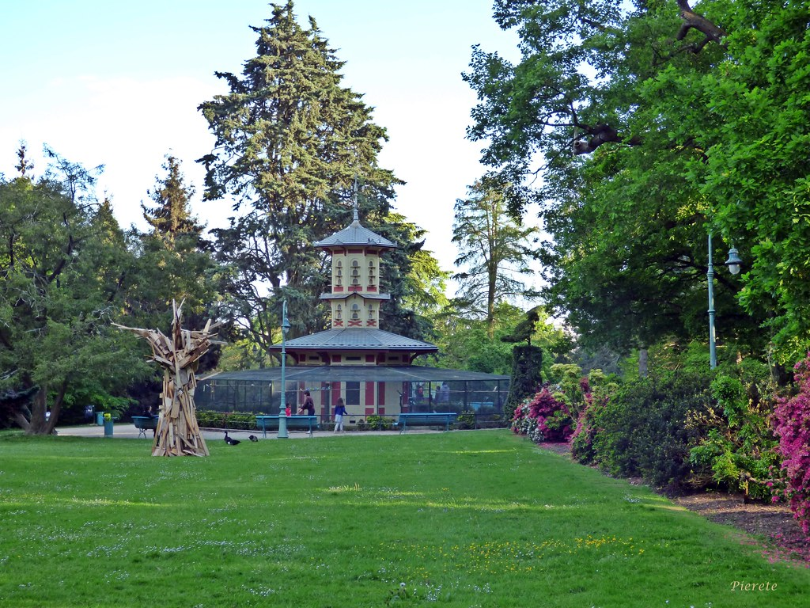

The Aviary is one of the highlights of the Thabor Park, delighting young and old visitors alike. It is the
favourite place of families and bird lovers. The Aviary was designed in 1862 by the architect Jean Baptiste
Martenot, and is located to the west of the park, in the extension of the French garden.
It is divided into
two
levels, the first circular level contains the most exotic species and the second level is composed of a
dovecote
which overlooks the whole aviary in its centre.
The aviary contains more than 420 birds, including diamond doves, Japanese sparrows, pheasants, Chinese
quails,
parakeets and mandarin diamonds.
The aviary is maintained by one of the park's animal gardeners, who is responsible for feeding them,
cleaning
their enclosures and ensuring that they reproduce well. Visitors are therefore asked not to feed the birds
or
try to touch them.
